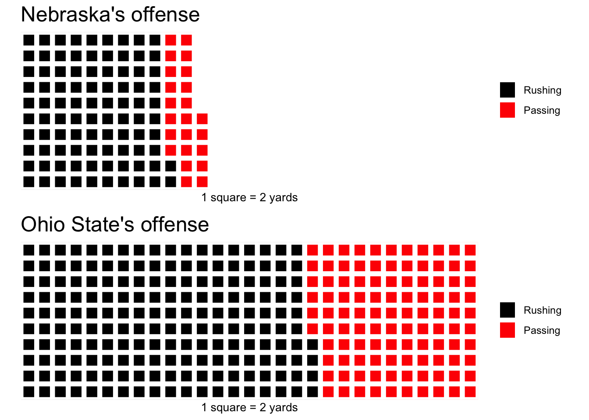
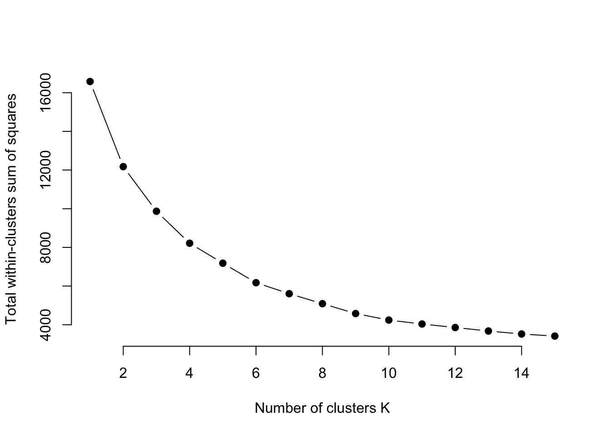
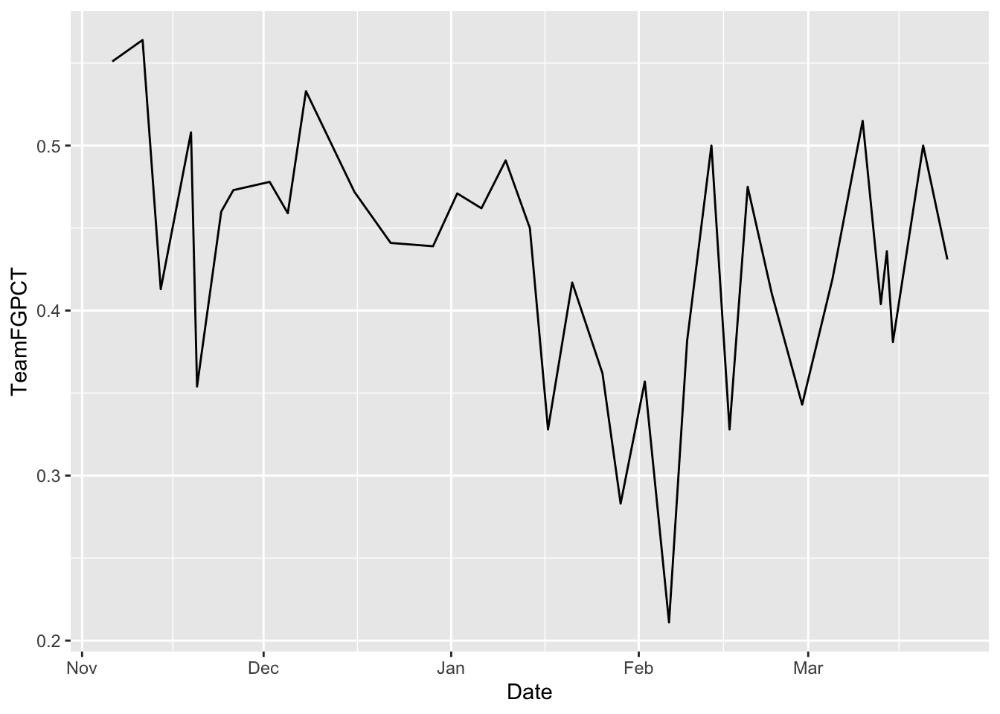
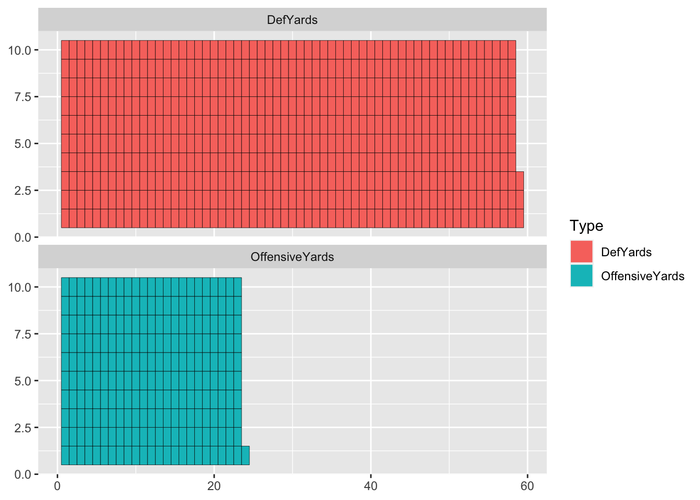

Chapter 15 Waffle charts
Pie charts are the devil. They should be an instant F in any data visualization class. The problem? How carefully can you evaluate angles and area? Unless they are blindingly obvious and only a few categories, not well. If you’ve got 25 categories, how can you tell the difference between 7 and 9 percent? You can’t.
So let’s introduce a better way: The Waffle Chart. Some call it a square pie chart. I personally hate that. Waffles it is.
A waffle chart is designed to show you parts of the whole – proportionality. How many yards on offense come from rushing or passing. How many singles, doubles, triples and home runs make up a teams hits. How many shots a basketball team takes are two pointers versus three pointers.
First, install the library in the console. We want a newer version of the waffle library than is in CRAN – where you normally get libraries from – so copy and paste this into your console:
install.packages("waffle")
Now load it:
library(waffle)15.1 Waffles two ways: Part 1
Let’s look at the debacle that was Nebraska vs. Ohio State this past fall in college football. Here’s the box score, which we’ll use for this part of the walkthrough.
Maybe the easiest way to do waffle charts, at least at first, is to make vectors of your data and plug them in. To make a vector, we use the c or concatenate function.
So let’s look at offense. Rushing vs passing.
nu <- c("Rushing"=184, "Passing"=47)
oh <- c("Rushing"=368, "Passing"=212)So what does the breakdown of the night look like?
The waffle library can break this down in a way that’s easier on the eyes than a pie chart. We call the library, add the data, specify the number of rows, give it a title and an x value label, and to clean up a quirk of the library, we’ve got to specify colors.
waffle(
nu,
rows = 10,
title="Nebraska's offense",
xlab="1 square = 1 yard",
colors = c("black", "red")
)
Or, we could make this two teams in the same chart.
passing <- c("Nebraska"=47, "Ohio State"=212)waffle(
passing,
rows = 10,
title="Nebraska vs Ohio State: passing",
xlab="1 square = 1 yard",
colors = c("red", "black")
)
So what does it look like if we compare the two teams using the two vectors in the same chart? To do that – and I am not making this up – you have to create a waffle iron. Get it? Waffle charts? Iron?
iron(
waffle(nu,
rows = 10,
title="Nebraska's offense",
xlab="1 square = 1 yard",
colors = c("black", "red")
),
waffle(oh,
rows = 10,
title="Ohio State's offense",
xlab="1 square = 1 yard",
colors = c("black", "red")
)
)
What do you notice about this chart? Notice how the squares aren’t the same size? Well, Ohio State out-gained Nebraska by a long way. So the squares aren’t the same size because the numbers aren’t the same. We can fix that by adding an unnamed padding number so the number of yards add up to the same thing. Let’s make the total for everyone be 580, Ohio State’s total yards of offense. So to do that, we need to add a padding of 349 to Nebraska. REMEMBER: Don’t name it or it’ll show up in the legend.
nu <- c("Rushing"=184, "Passing"=47, 349)
oh <- c("Rushing"=368, "Passing"=212, 0)Now, in our waffle iron, if we don’t give that padding a color, we’ll get an error. So we need to make it white. Which, given our white background, means it will disappear.
iron(
waffle(nu,
rows = 10,
title="Nebraska's offense",
xlab="1 square = 1 yard",
colors = c("black", "red", "white")
),
waffle(oh,
rows = 10,
title="Ohio State's offense",
xlab="1 square = 1 yard",
colors = c("black", "red", "white")
)
)
One last thing we can do is change the 1 square = 1 yard bit – which makes the squares really small in this case – by dividing our vector. Remember what you learned in Swirl about math on vectors?
iron(
waffle(nu/2,
rows = 10,
title="Nebraska's offense",
xlab="1 square = 2 yards",
colors = c("black", "red", "white")
),
waffle(oh/2,
rows = 10,
title="Ohio State's offense",
xlab="1 square = 2 yards",
colors = c("black", "red", "white")
)
)
News flash: Ohio State crushed Nebraska.
15.2 Waffles two ways: Part 2
For this part, we want a newer version of the waffle library than is in CRAN – where you normally get libraries from.
WARNING: This didn’t work in a variety of environments, so it may not work on yours.
Copy and paste this into your console:
install.packages("waffle", repos = "https://cinc.rud.is")
At first, this way might seem harder than doing it the way we just walked through, but the benefits will come later when it’s far, far easier to style this chart, where the previous charts are harder.
We have the log of every game in college football – you can get it here – and we can find this game with some simple filtering.
fblogs <- read_csv("data/footballlogs19.csv")##
## ── Column specification ────────────────────────────────────────────────────────
## cols(
## .default = col_double(),
## Date = col_date(format = ""),
## HomeAway = col_character(),
## Opponent = col_character(),
## Result = col_character(),
## TeamFull = col_character(),
## TeamURL = col_character(),
## Outcome = col_character(),
## Team = col_character(),
## Conference = col_character()
## )
## ℹ Use `spec()` for the full column specifications.fblogs %>% filter(Team == "Nebraska" & Opponent == "Ohio State")## # A tibble: 1 x 54
## Game Date HomeAway Opponent Result PassingCmp PassingAtt PassingPct
## <dbl> <date> <chr> <chr> <chr> <dbl> <dbl> <dbl>
## 1 5 2019-09-28 <NA> Ohio St… L (7-… 8 17 47.1
## # … with 46 more variables: PassingYds <dbl>, PassingTD <dbl>,
## # RushingAtt <dbl>, RushingYds <dbl>, RushingAvg <dbl>, RushingTD <dbl>,
## # OffensivePlays <dbl>, OffensiveYards <dbl>, OffenseAvg <dbl>,
## # FirstDownPass <dbl>, FirstDownRush <dbl>, FirstDownPen <dbl>,
## # FirstDownTotal <dbl>, Penalties <dbl>, PenaltyYds <dbl>, Fumbles <dbl>,
## # Interceptions <dbl>, TotalTurnovers <dbl>, TeamFull <chr>, TeamURL <chr>,
## # Outcome <chr>, TeamScore <dbl>, OpponentScore <dbl>, DefPassingCmp <dbl>,
## # DefPassingAtt <dbl>, DefPassingPct <dbl>, DefPassingYds <dbl>,
## # DefPassingTD <dbl>, DefRushingAtt <dbl>, DefRushingYds <dbl>,
## # DefRushingAvg <dbl>, DefRushingTD <dbl>, DefPlays <dbl>, DefYards <dbl>,
## # DefAvg <dbl>, DefFirstDownPass <dbl>, DefFirstDownRush <dbl>,
## # DefFirstDownPen <dbl>, DefFirstDownTotal <dbl>, DefPenalties <dbl>,
## # DefPenaltyYds <dbl>, DefFumbles <dbl>, DefInterceptions <dbl>,
## # DefTotalTurnovers <dbl>, Team <chr>, Conference <chr>That’s the game. So now we need to make this long data – same as we did with the stacked bar charts – and we’ll focus on total yards.
fblogs %>%
filter(Team == "Nebraska" & Opponent == "Ohio State") %>%
select(Team, OffensiveYards, DefYards) %>%
pivot_longer(
cols=c("OffensiveYards", "DefYards"),
names_to="Type",
values_to="Yards"
)## # A tibble: 2 x 3
## Team Type Yards
## <chr> <chr> <dbl>
## 1 Nebraska OffensiveYards 231
## 2 Nebraska DefYards 583That does what we want, so let’s save that to a new dataframe.
nuoh <- fblogs %>%
filter(Team == "Nebraska" & Opponent == "Ohio State") %>%
select(Team, OffensiveYards, DefYards) %>%
pivot_longer(
cols=c("OffensiveYards", "DefYards"),
names_to="Type",
values_to="Yards"
)Now we can use a new geom – geom_waffle – that the waffle library has added to ggplot. The geom_waffle takes two required inputs: fill and value, but otherwise, it looks the same as previous things we’ve done.
ggplot() + geom_waffle(
data=nuoh,
aes(fill=Type, values=Yards)) First, we can see that going this route changes the boxes to narrow rectangles. That’s to fill the space given.
First, we can see that going this route changes the boxes to narrow rectangles. That’s to fill the space given.
If we want to split them, we can use something called a facet_wrap which we will spend a whole class on later, so don’t worry about this now. Just know we can split it by Type this way.
ggplot() + geom_waffle(
data=nuoh,
aes(fill=Type, values=Yards)
) + facet_wrap(~Type) Now we can stack the two charts so they aren’t side by side using
Now we can stack the two charts so they aren’t side by side using ncol inside the facet_wrap.
ggplot() + geom_waffle(
data=nuoh,
aes(fill=Type, values=Yards)
) + facet_wrap(~Type, ncol=1) Now it’s just a matter of formatting, labeling and general cleanup. We’ll focus on that later as well, but here’s a quick way to get started, which we did in the bar chart chapter.
Now it’s just a matter of formatting, labeling and general cleanup. We’ll focus on that later as well, but here’s a quick way to get started, which we did in the bar chart chapter.
ggplot() + geom_waffle(
data=nuoh,
aes(fill=Type, values=Yards)
) +
facet_wrap(~Type, ncol=1) +
theme_minimal() +
theme_enhance_waffle()